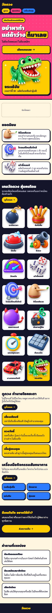
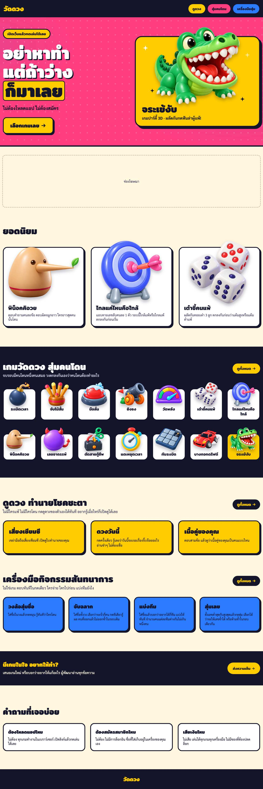
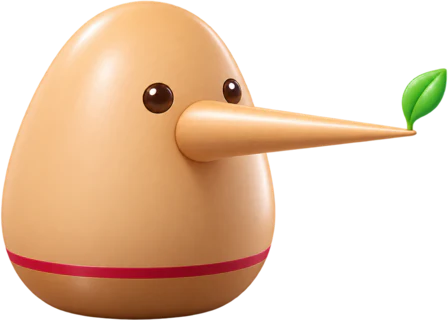
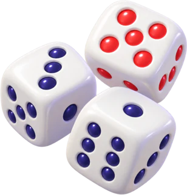
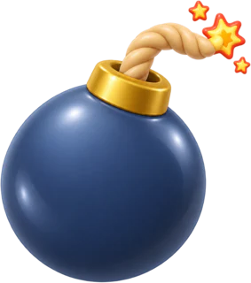
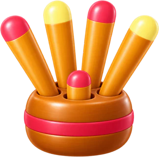
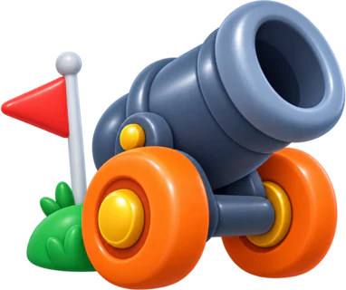
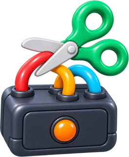
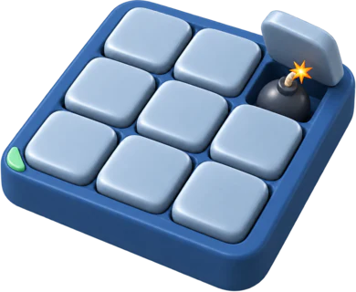
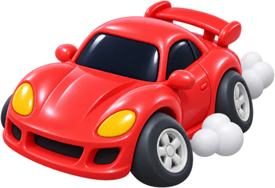

Instrument: the built dist/ (built after the last src commit b36b9b1), served by npx serve, driven by scripts/driver.mjs over CDP into headless Chrome (--headless=new). Width set by device-metrics emulation, innerWidth read back equal to the width asked for. After document.fonts.ready plus 300ms. Offsets are page y from the offsetTop chain, so the scroll-reveal's 16px translate on below-the-fold sections is not in them (a first pass read through getBoundingClientRect and came out 16px low on every below-the-fold section; those numbers are discarded). Every run at a width returned the same numbers.
| width x height | n | hero ends | popular starts | party band starts | shelf grid (tiles · columns · height) | fortune starts | tools start | page height |
|---|---|---|---|---|---|---|---|---|
| 390x844 | 3 | 741 | 911 | 1338 | 14 · 2 · 1287px (1548 to 2835) | 2911 = 3.45 screens | 3438 = 4.07 screens | 4557 |
| 320x568 | 3 | 789 | 959 | 1429 | 14 · 2 · 1070px (1639 to 2709) | 2785 = 4.90 screens | 3359 = 5.91 screens | 4511 |
| 1280x800 | 3 | 712 | 1096 | 1683 | 14 · 7 · 349px (1887 to 2236) | 2415 = 3.02 screens | 2786 = 3.48 screens | 3831 |
The audit's "about 1,300px" is the phone shelf grid itself: 1287px at 390 (14 tiles, 2 columns, 7 rows), 1070px at 320. The four games shown twice: พิน็อคคิอวย · ไกลแค่ไหนคือใกล้ · เต๋าชี้คนแพ้ · จระเข้งับ. The first three are the popular row and sit again in the shelf; the last is the hero's featured card and sits again in the shelf as its yellow highlight tile. Console errors on the built page during the runs: 0.

first screen ends · 844 shelf grid starts · 1548 shelf grid ends · 2835 fortune starts · 2911 tools start · 3438
first screen ends · 800 shelf grid starts · 1887 fortune starts · 2415 tools start · 2786Text: the h1 props of src/pages/index.astro, rendered the way HomeHero.astro renders them: line 1, a line break, line 2, then the gold chip. Owner ruling 2026-11-04, deployed. Why this row exists: the home boards still draw an older h1. HomeShelfDesktop, HomeShelf320, Gh288HomeHero and Gh288MotionSheet each carry an h1 and none carries the ruled text. These frames are the canvas copy of the ruled h1; they propose nothing. Hero values: HomeHero.astro and FeaturedCard.astro; the ambient layer is its static base pose at the picked 0.12. Positive control, measured: the drawn hero is 632px tall at 390 and 628px at 1280, with the h1 box 362x103 and 602x278; the built page measures 632px, 628px, 362x103 and 602x278 at the same widths (equal).
ไม่ต้องโหลดแอป ไม่ต้องสมัคร
เลือกเกมเลยไม่ต้องโหลดแอป ไม่ต้องสมัคร
เลือกเกมเลยRead the numbers this way. MEASURED = the built page. PROJECTED = the built page with the option's edit applied in the browser by the probe (tiles removed, or hidden at the phone width), then measured the same way; not a build. DRAWN = measured on this board's own frame (positive control: frame A against the built page). Blue dashed lines mark where each 844px screen ends. No option puts fortune on the first screen: chrome, hero, ad and the popular row already run to 1338px at 390.

พิน็อคคิอวยตอบคำถามคนละข้อ ตอบผิดจมูกยาว ใครยาวสุดคนนั้นโดนไกลแค่ไหนคือใกล้แอบทายเลขลับคนละ 1 ตัว รอบนี้ใกล้แพ้หรือไกลแพ้ ตกลงกันก่อนเริ่ม
เต๋าชี้คนแพ้ผลัดกันทอยเต๋า 3 ลูก ตกลงกันก่อนว่าแต้มสูงหรือแต้มต่ำแพ้จบรอบมีคนโดนหนึ่งคนเสมอ วงตกลงกันเองว่าคนโดนต้องทำอะไร

ระเบิดเวลา
จับไม้สั้นมือลั่น
ยิงธงวัดพลังเต๋าชี้คนแพ้ไกลแค่ไหนคือใกล้พิน็อคคิอวยเลขอาถรรพ์
ตัดสายกู้ชีพแตะหยุดเวลา
กับระเบิด
บางกอกดริฟต์จระเข้งับไม่มีใครแพ้ ไม่มีใครโดน กดดูดวงของตัวเองได้ทันที อยากรู้เมื่อไหร่ก็เปิดดูได้เลย
ไม่ใช่เกม ตอบทันทีในกดเดียว ใครจ่าย ใครไปก่อน แบ่งทีมยังไง
จบรอบมีคนโดนหนึ่งคนเสมอ วงตกลงกันเองว่าคนโดนต้องทำอะไร
ไม่มีใครแพ้ ไม่มีใครโดน กดดูดวงของตัวเองได้ทันที อยากรู้เมื่อไหร่ก็เปิดดูได้เลย
ไม่ใช่เกม ตอบทันทีในกดเดียว ใครจ่าย ใครไปก่อน แบ่งทีมยังไง
จบรอบมีคนโดนหนึ่งคนเสมอ วงตกลงกันเองว่าคนโดนต้องทำอะไร
ไม่มีใครแพ้ ไม่มีใครโดน กดดูดวงของตัวเองได้ทันที อยากรู้เมื่อไหร่ก็เปิดดูได้เลย
ไม่ใช่เกม ตอบทันทีในกดเดียว ใครจ่าย ใครไปก่อน แบ่งทีมยังไง
B and C are the same at 1280: the cap is phone-only. De-duplicating keeps the desktop shelf at 2 rows of the 7-column grid; the second row holds 3 tiles instead of 7. Fortune moves up 23px at 1280 (PROJECTED 2392 against MEASURED 2415). Keeping 7 columns is deliberate: a 5-column grid would fill both rows but is a NEW VALUE, not proposed here.
จบรอบมีคนโดนหนึ่งคนเสมอ วงตกลงกันเองว่าคนโดนต้องทำอะไร
จบรอบมีคนโดนหนึ่งคนเสมอ วงตกลงกันเองว่าคนโดนต้องทำอะไร
Screens = offset / viewport height. Deltas are against A at the same width. PROJECTED runs: 1 of 18 probe runs failed to find the popular section (a load race in the probe: 320 wide) and are not counted; every counted run at a width agreed.
| viewport | A · keeps D | B · de-duplicated | C · short phone shelf |
|---|---|---|---|
| 390x844 | MEASURED n=3 fortune 2911 (3.45 screens) tools 3438 (4.07 screens) shelf tiles shown 14 · shelf grid 1287px tall page 4557px | PROJECTED n=2 fortune 2532 (3.00 screens) −379 tools 3059 (3.62 screens) −379 shelf tiles shown 10 · shelf grid 908px tall page 4177px | PROJECTED n=2 fortune 1963 (2.33 screens) −948 tools 2490 (2.95 screens) −948 shelf tiles shown 4 · shelf grid 339px tall page 3609px |
| 320x568 | MEASURED n=3 fortune 2785 (4.90 screens) tools 3359 (5.91 screens) shelf tiles shown 14 · shelf grid 1070px tall page 4511px | PROJECTED n=2 fortune 2467 (4.34 screens) −318 tools 3042 (5.36 screens) −317 shelf tiles shown 10 · shelf grid 753px tall page 4194px | PROJECTED n=2 fortune 1992 (3.51 screens) −793 tools 2566 (4.52 screens) −793 shelf tiles shown 4 · shelf grid 277px tall page 3719px |
| 1280x800 | MEASURED n=3 fortune 2415 (3.02 screens) tools 2786 (3.48 screens) shelf tiles shown 14 · shelf grid 349px tall page 3831px | PROJECTED n=2 fortune 2392 (2.99 screens) −23 tools 2762 (3.45 screens) −24 shelf tiles shown 10 · shelf grid 325px tall page 3808px | PROJECTED n=2 fortune 2392 (2.99 screens) −23 tools 2762 (3.45 screens) −24 shelf tiles shown 10 · shelf grid 325px tall page 3808px |
| option | changed values (everything else is today's CSS and copy) |
|---|---|
| A | none |
| B | shelf set: party games minus the popular row minus the featured game (a data rule, not a CSS value) · shelf tiles 14 → 10 · phone rows 7 → 5 · desktop row 2 holds 3 tiles · the shelf highlight tile no longer renders, because the featured game leaves the shelf |
| C | everything in B · NEW VALUE: phone shelf cap 4 tiles, inside the existing max-width 639px query (no new breakpoint) · 640 to 1099px and desktop keep all 10 · at max-width 639px, 6 party games are not on the home page and sit one tap away on the party hub · the hidden tiles stay in the document |
Strings were read from the built page, then each was found verbatim in src by the board's generator; a string not found fails the generator. Invented Thai: 0. The ดวงวันนี้ tagline is drawn without its invisible word joiners; its two kept words are wrapped in a no-wrap span instead, the same effect as the page's joiners.
| role | string | source |
|---|---|---|
| h1 line 1 (titleTop) | อย่าหาทำ | src/pages/index.astro |
| h1 line 2 (titleLead) | แต่ถ้าว่าง | src/pages/index.astro |
| h1 chip (titleMark) | ก็มาเลย | src/pages/index.astro |
| hero badge | เปิดเว็บแล้วกดเล่นได้เลย | src/pages/index.astro |
| hero lead | ไม่ต้องโหลดแอป ไม่ต้องสมัคร | src/pages/index.astro |
| hero call to action | เลือกเกมเลย | src/pages/index.astro |
| ad placeholder | ช่องโฆษณา | src/pages/index.astro |
| see-all pill | ดูทั้งหมด → | src/pages/index.astro |
| page title (quoted in the h1 question) | วัดดวง — ดูดวง สุ่มคนโดน และเครื่องมือสุ่ม ฟรีบนมือถือเครื่องเดียว | src/pages/index.astro |
| popular heading | ยอดนิยม | src/games/manifest.ts |
| party heading | เกมวัดดวง สุ่มคนโดน | src/games/categories.ts |
| party body | จบรอบมีคนโดนหนึ่งคนเสมอ วงตกลงกันเองว่าคนโดนต้องทำอะไร | src/games/categories.ts |
| fortune heading | ดูดวง ทำนายโชคชะตา | src/games/categories.ts |
| fortune body | ไม่มีใครแพ้ ไม่มีใครโดน กดดูดวงของตัวเองได้ทันที อยากรู้เมื่อไหร่ก็เปิดดูได้เลย | src/games/categories.ts |
| tools heading | เครื่องมือกิจกรรมสันทนาการ | src/tools/manifest.ts |
| tools body | ไม่ใช่เกม ตอบทันทีในกดเดียว ใครจ่าย ใครไปก่อน แบ่งทีมยังไง | src/tools/manifest.ts |
| featured name | จระเข้งับ | src/games/croc-bite.ts |
| featured tagline | เกมปาร์ตี้ 3D · ผลัดกันกดฟันล่าผู้แพ้! | src/games/croc-bite.ts |
| popular tagline | ตอบคำถามคนละข้อ ตอบผิดจมูกยาว ใครยาวสุดคนนั้นโดน | src/games/pinocchio-luck.ts |
| popular tagline | แอบทายเลขลับคนละ 1 ตัว รอบนี้ใกล้แพ้หรือไกลแพ้ ตกลงกันก่อนเริ่ม | src/games/how-close-is-near.ts |
| popular tagline | ผลัดกันทอยเต๋า 3 ลูก ตกลงกันก่อนว่าแต้มสูงหรือแต้มต่ำแพ้ | src/games/dice-loser.ts |
| game name | ระเบิดเวลา | src/games/timebomb.ts |
| game name | จับไม้สั้น | src/games/short-stick.ts |
| game name | มือลั่น | src/games/freeze-tap.ts |
| game name | ยิงธง | src/games/cannon-flag.ts |
| game name | วัดพลัง | src/games/power-meter.ts |
| game name | เต๋าชี้คนแพ้ | src/games/dice-loser.ts |
| game name | ไกลแค่ไหนคือใกล้ | src/games/how-close-is-near.ts |
| game name | พิน็อคคิอวย | src/games/pinocchio-luck.ts |
| game name | เลขอาถรรพ์ | src/games/cursed-number.ts |
| game name | ตัดสายกู้ชีพ | src/games/wire-snip-panic.ts |
| game name | แตะหยุดเวลา | src/games/zero-trigger.ts |
| game name | กับระเบิด | src/games/one-bomb.ts |
| game name | บางกอกดริฟต์ | src/games/bangkok-drift.ts |
| fortune name | เสี่ยงเซียมซี | src/games/siamsi.ts |
| fortune tagline | เขย่ามือถือเสี่ยงเซียมซี เปิดดูใบทำนายของคุณ | src/games/siamsi.ts |
| fortune name | ดวงวันนี้ | src/games/daily-fortune.ts |
| fortune tagline | กดครั้งเดียว รู้เลยว่าวันนี้จะเจอเรื่องจิ๊บจ๊อยอะไร อ่านขำๆ ไม่ต้องเชื่อ | src/games/daily-fortune.ts |
| fortune name | เนื้อคู่ของคุณ | src/games/love-match.ts |
| fortune tagline | ตอบสามข้อ แล้วดูว่าเนื้อคู่ของคุณเป็นคนแบบไหน | src/games/love-match.ts |
| tool name | วงล้อสุ่มชื่อ | src/tools/manifest.ts |
| tool description | ใส่ชื่อในวงแล้วกดหมุน รู้ทันทีว่าใครโดน | src/tools/manifest.ts |
| tool name | จับฉลาก | src/tools/manifest.ts |
| tool description | ใส่ชื่อทั้งวง เลือกว่าจะจั่วกี่คน กดทีเดียวรู้ผล คนที่ออกแล้วไม่ออกซ้ำในรอบเดิม | src/tools/manifest.ts |
| tool name | แบ่งทีม | src/tools/manifest.ts |
| tool description | ใส่ชื่อแล้วบอกว่าอยากได้กี่ทีม แบ่งให้ทันที จำนวนคนแต่ละทีมต่างกันไม่เกินหนึ่งคน | src/tools/manifest.ts |
| tool name | สุ่มเลข | src/tools/manifest.ts |
| tool description | ตั้งเลขต่ำสุดกับสูงสุดแล้วกดสุ่ม เลือกได้ว่าจะให้เลขซ้ำได้ หรือห้ามซ้ำในรอบเดียวกัน | src/tools/manifest.ts |
| kept word (no line break inside) | อ่านขำๆ | src/components/thai-keep.ts |
| kept word (no line break inside) | จิ๊บจ๊อยอะไร | src/components/thai-keep.ts |
| nav label (quoted in the h1 question) | ดูดวง | src/components/PageChrome.astro |
| nav label (quoted in the h1 question) | สุ่มคนโดน | src/components/PageChrome.astro |
| nav label (quoted in the h1 question) | เครื่องมือสุ่ม | src/components/PageChrome.astro |
Palette, every frame colour: #ff3d7f, #ffcc00, #2b7bff, #14142b, #fff6e0, #3d3b5c, #c9c3a8, #d9d6f0 (src/styles/tokens.css values), #ffffff, rgba(255,255,255,0.18) (--hero-dot), rgba(20,20,43,0.28) (--art-shadow). No new colour. Annotation colours (#e9e3cf in the hatched stub, the blue rulers, the gold markers) are not design values.
Not drawn, and why: (1) Dropping the popular row instead of the shelf duplicates: it moves fortune up by the popular row's height but leaves the featured game shown twice. (2) A one-row swipe shelf on phones: a new interaction with a weak affordance at 320, and new scroll-snap values to pin. (3) Moving fortune and tools above the party band: it reorders D's party-first structure more deeply than B or C and still leaves the duplicates. Each can be drawn if the owner asks.
Not covered: real phones, Safari and Firefox. The B and C numbers are projections on the built page, not builds. The drawn frames are still pictures: no tile wiggle, no featured-card bob, no scroll reveal. The chrome bar is not replayed; the option frames stub it with the hero at the measured height.